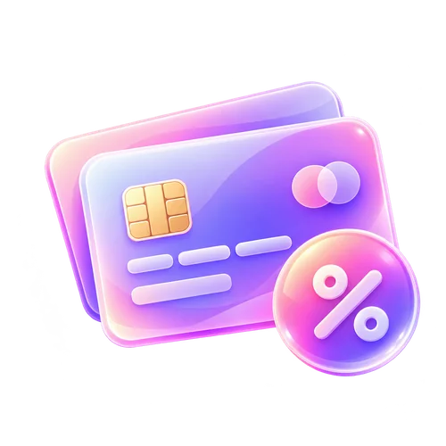

2만원대홈 / 후불요금제
후불 알뜰폰 비교2026.09 조사 자료
알뜰폰 2만원 이하, 실제 가능한 1만원대 요금제
월 2만원 미만이라는 예산이 최우선이라면 카드 할인 전 기본료부터 확인해야 합니다.
자료 기준일: 2026.09.28 · 요금·혜택은 신청 전 재확인

RELATED OFFERS
다른 조건의 요금제도 확인하세요
요금·데이터·가입 방법 중 필요한 조건을 선택하면 관련 페이지로 이동합니다.

요금제를 고르기 전에
이 페이지는 월 기본료가 20,000원보다 낮은 상품만 모읍니다. 동일한 7GB라도 망과 제휴 혜택, 가입 자격을 확인해야 합니다.
01 한 달 평균 데이터 사용량을 확인하세요.
02 기본료와 소진 후 최대 속도를 비교하세요.
03 프로모션·제휴 혜택·가입 자격을 확인하세요.
조건에 맞는 후불 요금제
기존 47개 후불 상품 자료에서 해당 조건으로 정렬한 비교 목록입니다. 실시간 판매 목록은 아닙니다.
L망후불 7GB+
7GB + 소진 후 최대 1Mbps
음성: 기본제공 (부가/영상 300분) · 문자: 기본제공
공식 상품 확인 ↗앤텔레콤 K망 7GB+(밀리의서재)
7GB + 소진 후 최대 1Mbps + 데이터 10GB 추가(24개월)
음성: 기본제공 (영상/부가통화 300분) · 문자: 기본제공
공식 상품 확인 ↗앤텔레콤 K망 7GB+(CU)
7GB + 소진 후 최대 1Mbps + 데이터 10GB 추가(24개월)
음성: 기본제공 (영상/부가통화 300분) · 문자: 기본제공
공식 상품 확인 ↗상품 가격·추가 데이터·가입 가능 여부·혜택의 기준일은 2026년 9월 28일입니다. 후불은 미납·연체 시 가입이 제한될 수 있습니다. 본 자료를 개통 승인으로 해석하지 마세요.
선택 후 가입 전에 확인할 순서
1
데이터·요금 비교
한 달 실제 사용량과 월 기본료 비교
2
번호이동·신규가입 구분
현재 번호 유지 여부와 회선 상태 확인
3
최신 가입 조건 확인
유심·본인확인·후불 가입 심사 점검
자주 묻는 질문
월 요금이 2만원 미만 상품이면 누구나 가입할 수 있나요?
아닙니다. 후불 가입 여부는 본인확인과 통신사 가입 조건, 미납 여부 등에 따라 달라질 수 있습니다.
알뜰폰으로 옮기면 현재 번호를 유지할 수 있나요?
번호이동 조건을 충족하면 기존 번호를 유지할 수 있지만 미납·정지 등으로 제한될 수 있습니다.